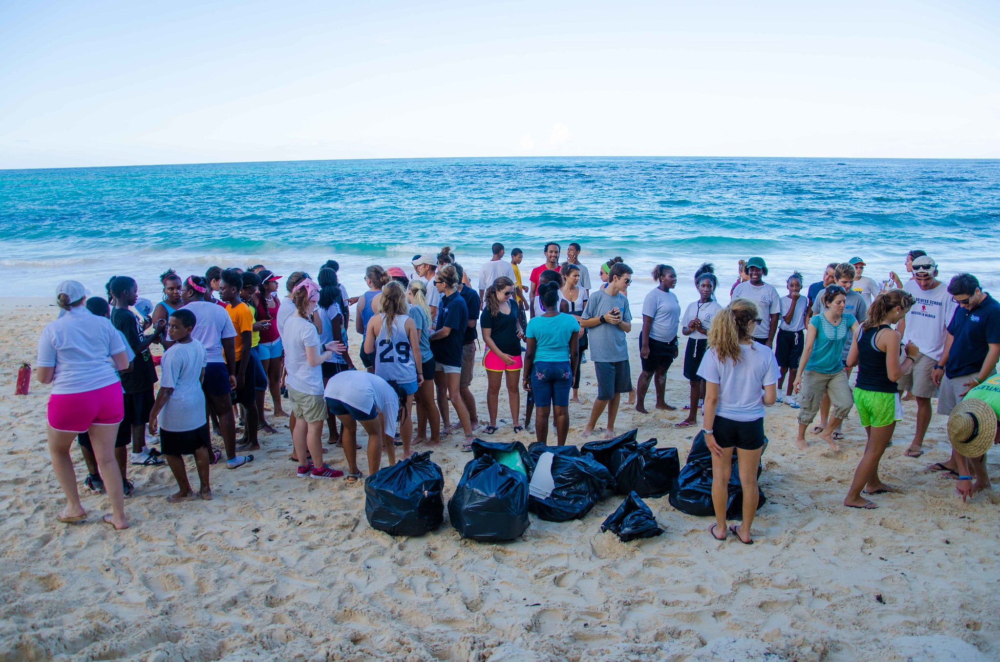
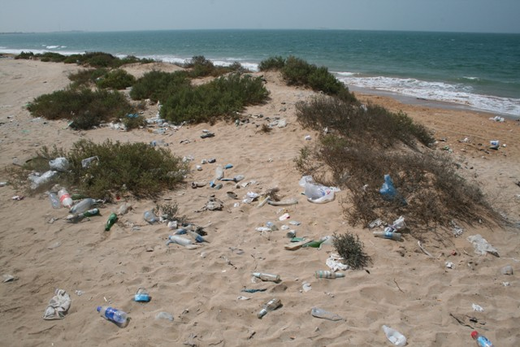
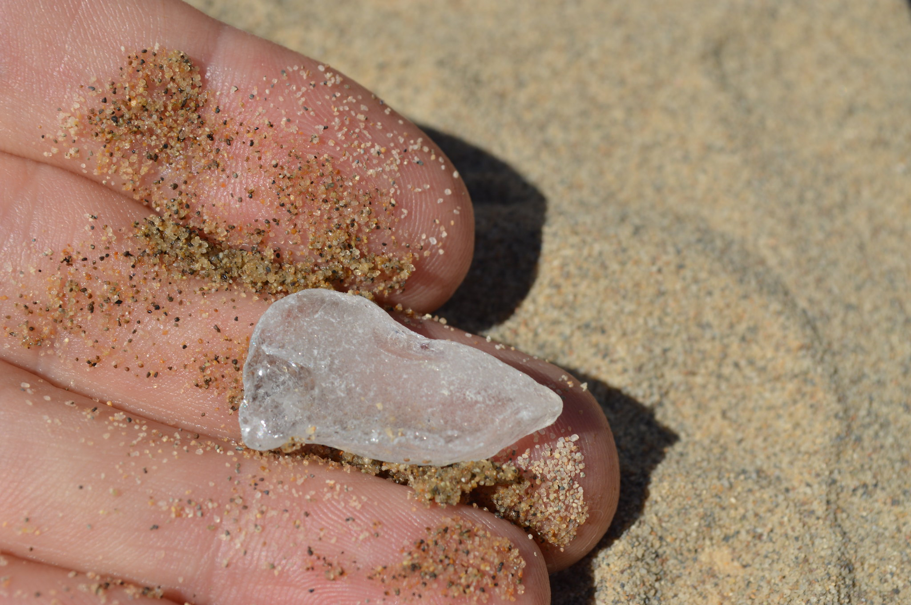

Gallery

Sunny Dunes Cleanup
April 12, 2025
This was our biggest turnout yet! Over 40 people showed up to help clean the dunes.

Windy Bay Bottles
March 30, 2025
We found a ton of bottles and cans at this location. Everything was sorted and recycled on site.

Seaglass Surprise
February 28, 2025
While cleaning up the shoreline, we found a beautiful batch of seaglass nestled in the rocks.